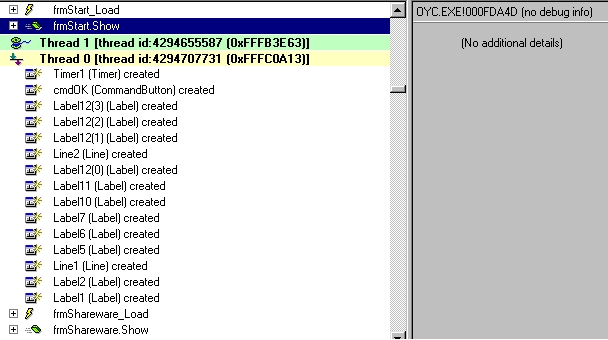

Coment cracker ORGANIZE! Your collection apps v5.18 by

Translation by: Secret Agent James Bond 007
Salut! =)
Aujourd'hui je vais vous apprendre comment cracker des prog VB avec 3 negs
et un timelimit!!
Je suis sûr que vous allez dire "putain c'est dur!"
hehehe !! j'étais en train de tracer avec SI quand j'ai eu une
idée...
Je vais vous expliquer en quoi çà consiste...
1) Tools required : - Smart-check 6
- Hex editor
- un cerveau =)
2) Comment cracker les nags !!
Bon pour cela on utilisera SC !
Chargez Oyc avec SC et exécutez le. Clicker sur le nag, attendez
que le bouton OK soit activé et ensuite quittez cette app...
Dans SC double clickez sur : frmOYCMain_load et regardez jusqu'à
ce que vous trouviez le ".show" ... dans SC vous verrez:

Donc, dans ce cas la chose importante est frmstart.show
A droite de SC vous voyez l'offset où il est situé et le fichier.
Pour ce nag, nous voyons qu'il est dans OYC.EXE @ 000FDA4D
Ok!
Je suppose que vous pensez que c'est ce que je voulais vous montrer !!!
Maintenant j'utilise mon cerveau pour virer le nag, parce que je sais
que le nag peut être appelé par un call, donc je pense pourquoi n'irions
nous pas à cet offset et regarder le premier call près de là?
Prenez votre HEXEDITEUR et allez à l'offset 000FDA4D.
Ok, maintenant vous savez que ce call commence avec : E8h et sa
longueur est de 5 octets...
Après avoir fait une recherche de ce E8h vous trouvez:
E8986FF0FF :)
Remplacez le par des NOP (90)... ce qui vous donne:
9090909090
Sauvez (faites un backup on ne sait jamais) et réexécutez le programme...
Comme par magie le premier Nag a été viré!!!!!!!
Bien!! hehe
Maintenant on va passer au suivant!
Vous voyez sur la figure ci-dessus qu'il y a un autre ".show"
Procédez de la même façon et vous virerez ainsi le timer et le nag!!
Je ne vais pas vous montrer la valeur à remplacer parce que c'est
exactement la même que dans le premier nag. Et puis c'est bien
d'avoir des ex. d'application :)
Ok... bon maintenant le dernier nag mais ce sera moins facile que les
autres...
Dans SC, double click sur : "mnuFExit_click" (vous le trouverez
à la fin du rapport de SC)
Ensuite double click sur "frmOYCMain_Unload" et descendez jusqu'à
ce que vous voyez: "frmEnd.Show". Regardez à droite et prenez
l'offset : 1001A1
Ok, maintenant vous vous dites, on va faire pareil qu'avec les deux autres,
et ça va être ok!
Eh bien non! Ca ne marchera pas!
Ok... j'ai réfléchi un peu et je me suis remémoré que vous pouvez
chercher un jump pour virer le nag, et dans les apps VB, je jump
toujours comme çà: 0F85 or 0F84 =)
Donc utilisez votre hexéditeur et allez à l'offset : 1001A1.
Faites une recherche de "OF" vers le haut. Et nous trouvons:
0F849A000000 ... remplacez le par 0F859A000000 (je => jne) et sauvegardez!
Maintenant, exécutez à nouveau!!
Plus de nag! plus de timelimit!
Parfait!
3) Notes:
J'ai écris ce tut pour montrer comment on peut patcher les apps VB et que
parfois un cerveau est plus utile que le traçage avec SI (j'ai bien dit : parfois).
Donc, cette façon de cracker les nags VB ne marche pas à tout les coups, mais j'ai
réussi à cracker plusieurs apps VB comme çà donc faites pas chier! :)
Si vous voyez que l'offset est dans un DLL genre MSVBVM50 ou MSVBVM60, faites
juste une copie et placez le dans le répertoire du programme et patchez le.
De cette manière, le prog utilisera la DLL qui est dans son répertoire et pas
celle du WINDOWS\SYSTEM.
Vous n'aurez comme çà pas de problème avec d'autres applications qui utilisent
les DLL... !!!
J'espère que ce tutorial n'était pas trop chiant et désolé pour mon mauvais
anglais...
Si vous avez des questions:
mail : ACiD_BuRN@nema.com ou acid2600@hotmail.com
Si vous crackez une app un jour avec cette méthode, dites-le moi! :)
Greetings to :
ALl ReFLeXZ TeaM , All ECLiPSE TeaM , ALL PWA team , ALL Toxic TeaM and all CrossOver
Team coz i am member in this cool groups !!
Also greets to : tKC , BuLLeT , Duelist , Eternal Bliss , HarvestR,
Parker, Agora , duelist , R!SC , Lucifer48 , tC , Pozeidon ...
if i forget to put ur name here , sorry coz too many people to greets !!
and Maybe you can found me on IRC on Effnet under this channel : #c.i.a , #cracking4newbies ...
ACiD BuRN
EMAIL DU TRADUCTEUR: snipernet_1@yahoo.com